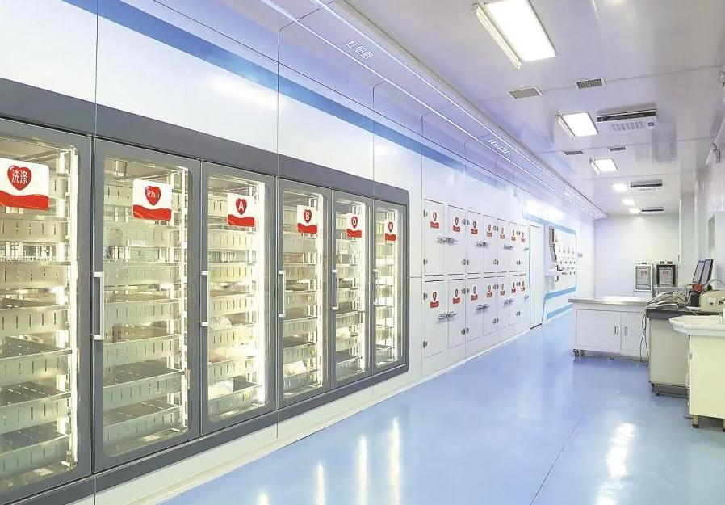

Connecting Donors with Lives in Need

The Blood Bank Portal is a web-based platform developed to efficiently manage blood donation activitiesand provide quick access to blood availability information.
This portal aims to bridge the gap between blood donors and patients in need by offering a simple, reliable, and user-friendly system.
Blood is a life-saving resource, and timely availability plays a critical role during medical emergencies, surgeries, and accidents.